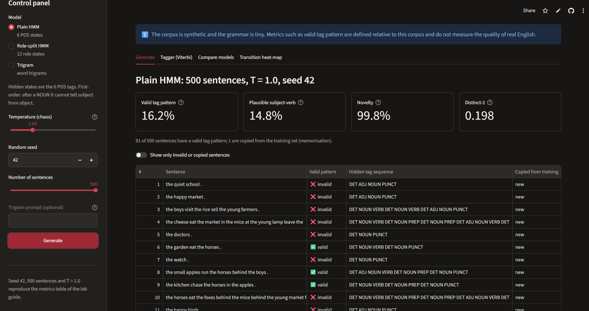
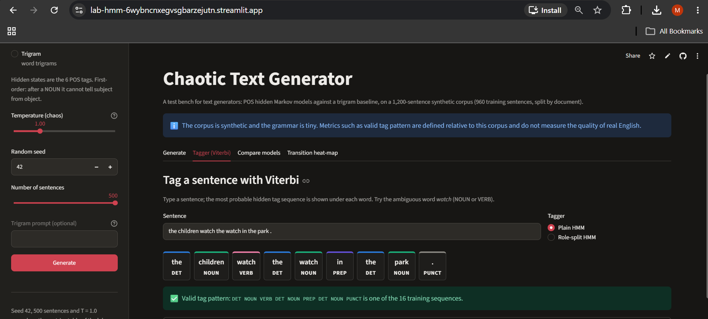
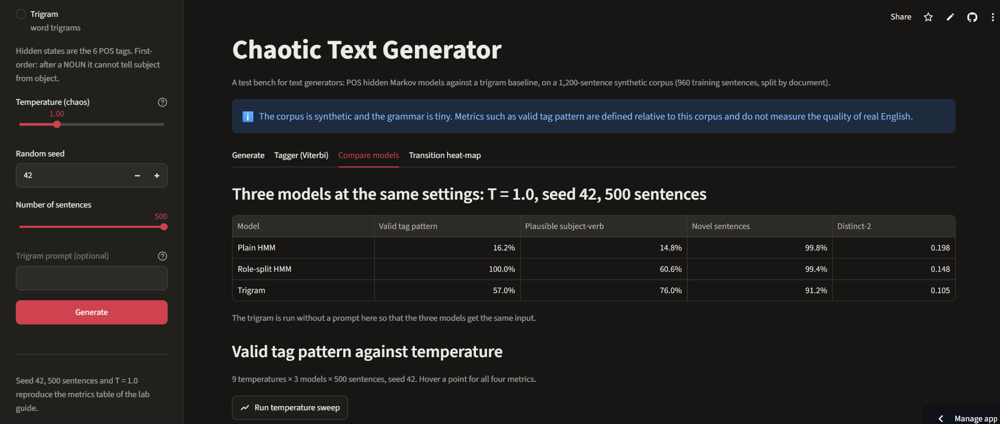
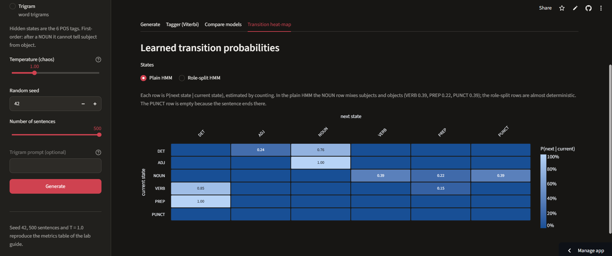
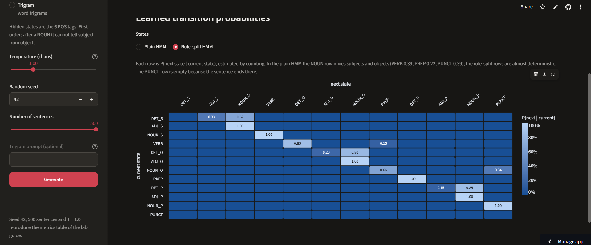

We need to generate new sentences and to recover the hidden structure (part-of-speech tags) of a sentence, and to prove the quality with metrics on hundreds of sentences rather than three examples. A supervised HMM is estimated by counting on 960 training sentences (split by document): start, transition P(tag | previous tag) and emission P(word | tag) tables with add-k smoothing (k = 0.01). It generates by sampling tags, then words, with temperature (weights count1/T), and tags sentences with Viterbi in log space. Role-split states (S / O / P) give the first-order model the memory it lacks; a trigram model is the baseline. A Streamlit test bench compares the three generators with four metrics and exposes a Viterbi tagger.
| Model | Valid pattern | Plausible S-V | Novel | Distinct‑2 |
|---|---|---|---|---|
| Plain HMM | 16.2% | 14.8% | 99.8% | 0.198 |
| Role-split HMM | 100% | 60.6% | 99.4% | 0.148 |
| Trigram | 57.0% | 76.0% | 91.2% | 0.105 |
Why the plain HMM scores low: its only state after a noun is NOUN, and P(next | NOUN) is VERB 0.39, PREP 0.22, PUNCT 0.39 whatever the noun's role. So it ends right after the subject (the doctors .) or adds a second verb after the object. Why role-split reaches 100%: NOUN_S can only go to VERB, NOUN_O to PREP or PUNCT, NOUN_P to PUNCT. Every sampled state path is one of the 16 training sequences. Viterbi accuracy is 100% for both models (including watch, 37 of 37).
| Sentence (model, T = 1.0 unless noted) | Type | Cause |
|---|---|---|
| the children eat the bread at the park . role-split HMM | GOOD | Valid pattern, seen subject-verb pair (children, eat), not in the training set: a genuinely new, correct sentence. |
| the boys visit the rice sell the young farmers . plain HMM | STRUCTURE | After the object rice the state is just NOUN, and P(VERB | NOUN) = 0.39, so a second verb is sampled. The first-order model has no memory that the verb was already used. |
| the foxes lose by the school . role-split HMM | MEANING | Valid pattern, but the pair (foxes, lose) never occurs: each word is emitted from its state alone, independently of the other words. |
| the girls leave the park . trigram, T = 0.5 | MEMORISATION | Copied verbatim from the training set: the trigram follows high-count word paths, worse at low T. Not "creative". |
Splitting NOUN, ADJ and DET by role (12 states instead of 6) changed the structure. The valid tag pattern jumps from 16.2% to 100% at every temperature, because the state now records where we are in the sentence, the information the Markov assumption throws away. Plausible subject-verb also rises from 14.8% to 60.6%: every sentence now has a verb, and the subject is drawn from NOUN_S, which only emits nouns seen as subjects. It did not change the meaning. Emissions are still P(word | state), so the verb is chosen without looking at the subject. Plausible subject-verb (60.6%) stays below the trigram (76.0%), which sees the actual previous words. The vocabulary is the same 61 words, Viterbi accuracy was already 100%, and diversity drops (distinct-2 0.198 → 0.148) because fewer wild combinations are possible. Richer states fix grammar, not semantics.
| Data, model | Accuracy | Known | Unknown | Sentence |
|---|---|---|---|---|
| Synthetic, HMM | 100% | 100% | n.a. | 100% |
| EWT, most-frequent tag | 86.2% | 90.8% | 28.6% | 31.9% |
| EWT, HMM + Viterbi | 88.0% | 92.9% | 28.2% | 40.4% |
| Synthetic | Real text (EWT) | |
|---|---|---|
| Tags / vocabulary | 6 / 61 | 17 / 16,654 |
| Distinct tag sequences / train sentences | 16 / 960 | 10,359 / 12,544 |
| Unknown test tokens | 0% | 7.5% |
The 100% on the synthetic corpus says more about the corpus than about the model. Its grammar is unambiguous once the previous tag is known, and every test word was seen in training. On real text the same code gains only 1.9 points (88.04% against 86.16%) over the most-frequent-tag baseline. Almost every sentence has its own tag sequence, so a first-order transition carries little information, and real ambiguity remains (PROPN tagged NOUN 281 times, VERB tagged AUX 105 times). Unknown words (7.5% of tokens) are tagged at only 28.2%. Their smoothed emission k / (count(tag) + k·V) is largest for rare tags, so they drift to X and INTJ (PROPN tagged X 195 times, PROPN tagged INTJ 137 times). The valid-tag-pattern metric is meaningless here. 88.0% instead of the guide's 88.1%: the EWT treebank on GitHub has been updated since the guide was written.




